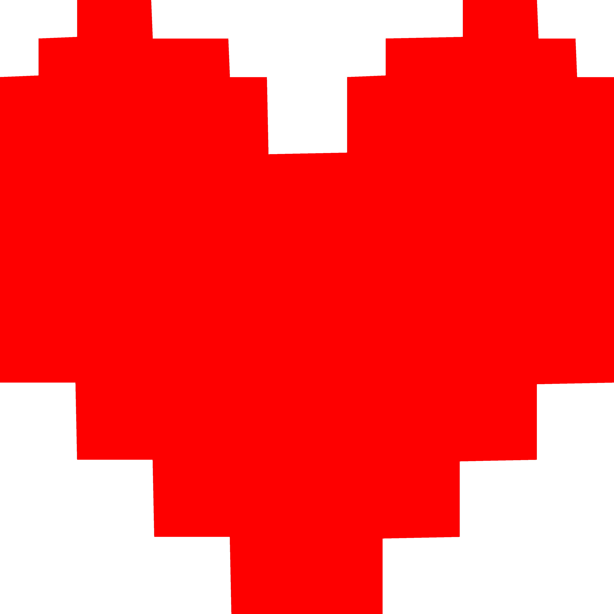

SANTI BELLO
Desarrollador Frontend
{React.js}
Soy un estudiante autodidacta gallego.
Dos años atrás empecé a trastear Java después de verle las 'tripas' a un videojuego, lo que me llevaría a descubrir el desarrollo Web.
Me encantó poder marcar la diferencia mediante código y un objetivo.
Busco un lugar interesante donde pueda seguir formándome y abrirme a nuevos desafíos.
Me considero responsable, organizado, trabajo en equipo y social, habiendo participado en la planificación y ejecución de más de 140 eventos de ocio a nivel regional.
Para cualquier duda, puesta a prueba (o saludarme!) contáctame vía email o twitter.
Destreza
JS React
CSS
PHP
Bootstrap
Java
Experiencia y Contribuciones
Actual! - 9 meses contribuyendo en Smashbrosspain
Actual! - Organizador de eventos de ocio en Gaming Troop
2 meses trabajando en Diariomotor
Proyectos
To do List(Antiguo)
Kanban(Antiguo)
API Clima(Antiguo)
Redes Sociales

Correo
sbellodev@gmail.com
Font and theme inspired by Undertale - Toby Fox.
© Santi Bello - 2/2/2019